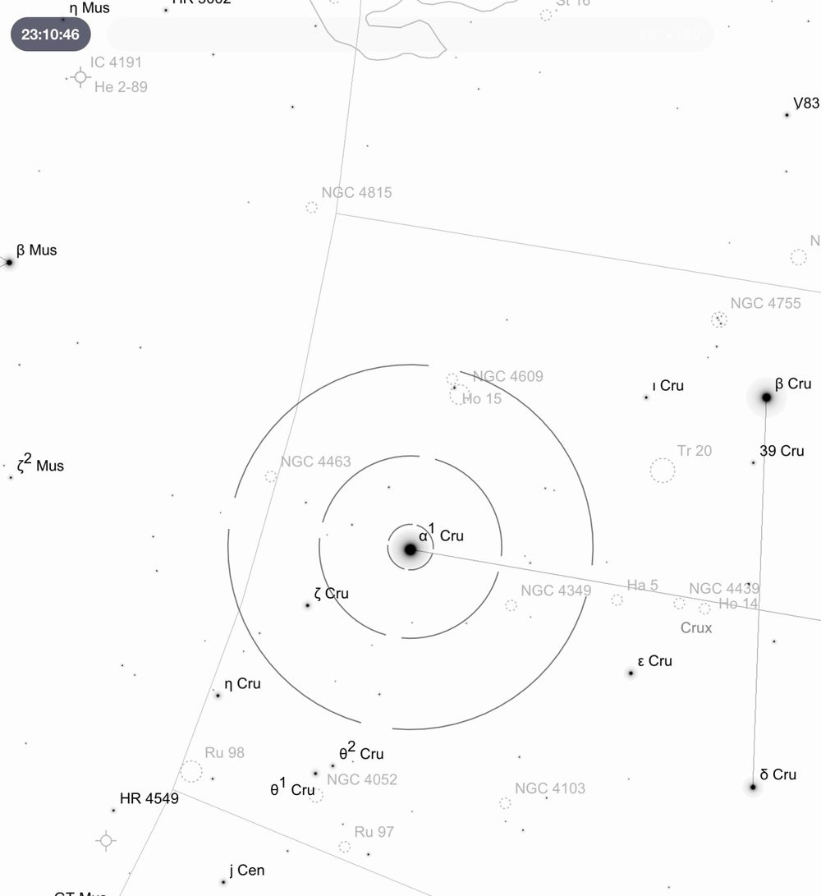
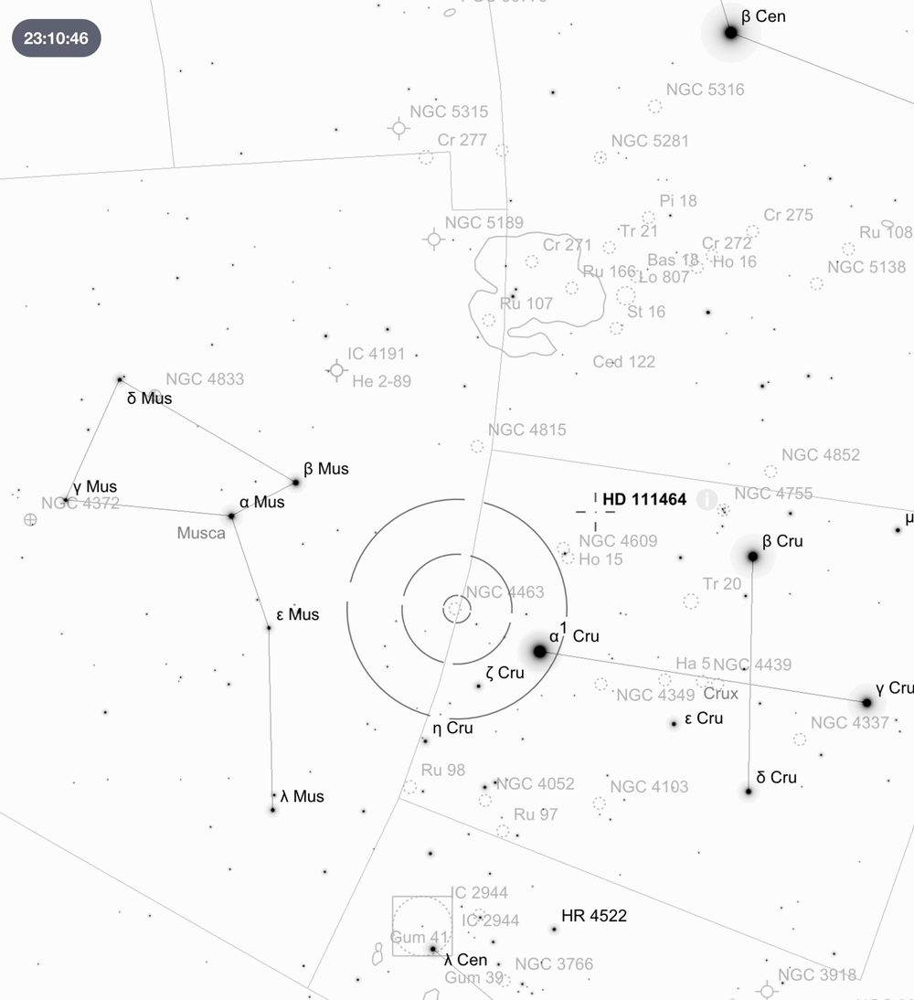
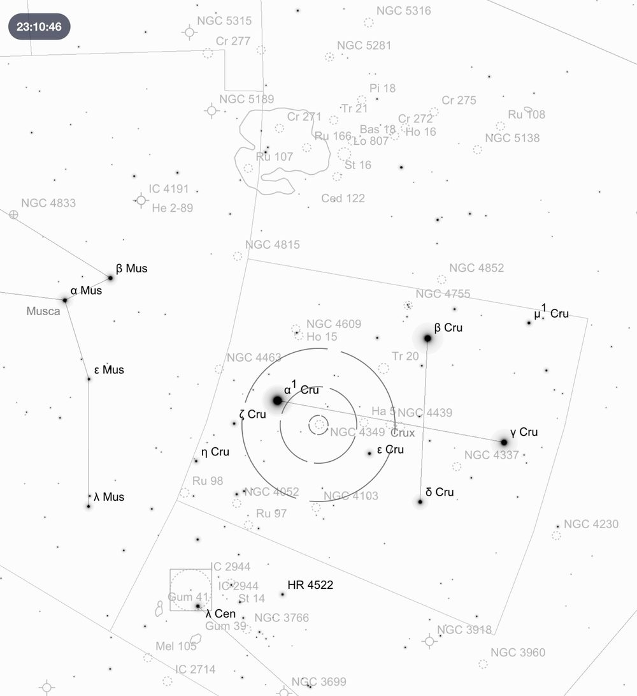
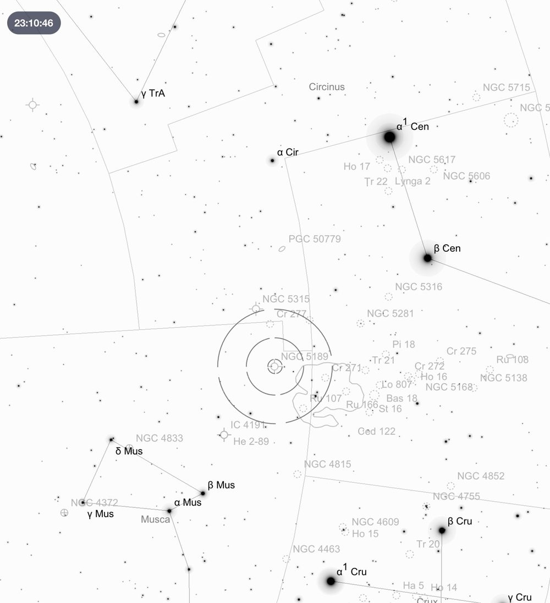
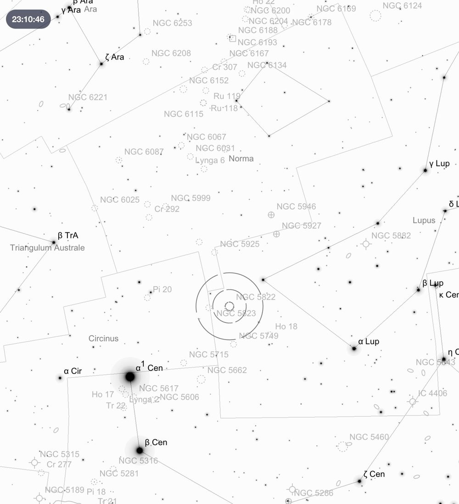
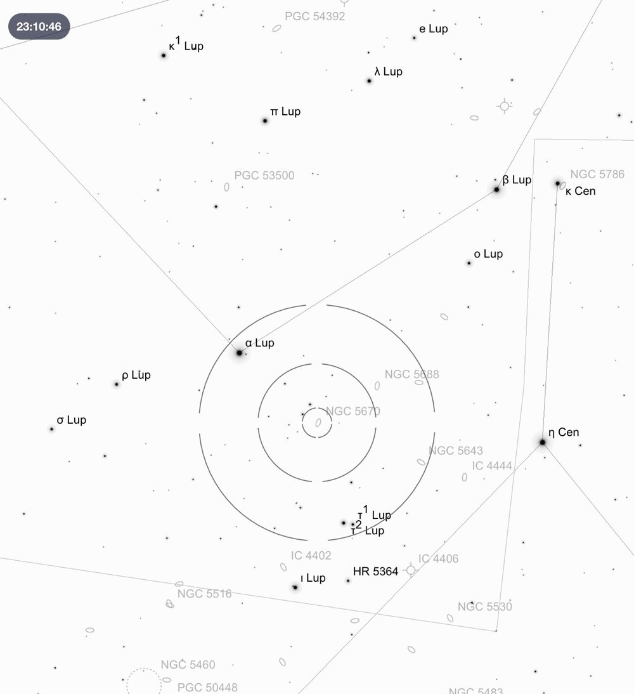
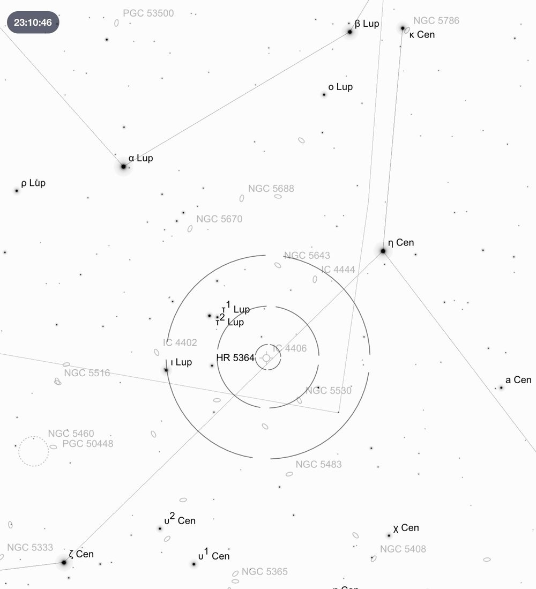

Deep Sky Notes — August 2025
Wiruna Wanderings

After missing Wiruna in July I was looking forward to escaping to Wiruna in August. August was the wettest in ~28 years so I was glad to get out of Sydney. I arrived on site on Friday afternoon with just enough time to pitch the tent before a band of rain set in. Although the afternoon teased with some blue key, by sunset it was a mostly cloudy sky with the odd sucker hole. So, it was a relaxed night of sitting around the fire in the kitchen. Although by 10.30pm the sky was threatening to clear, I decided to call it a night and try my luck the next day. Conditions on Saturday looked more promising, with sun and blue sky. Several more members arrived throughout the day. By sunset most of the cloud had dissipated and the wind had died down. I began by tinkering with a few fixes I had made to the telescope’s RA drive, but nothing seemed to be working. So, after an hour of fighting the telescope I gave up and focused on some observing.
Acrux ( Cru) makes an easy jumping off point to find the open cluster NGC 4339. Using the Telrad, I started by pointing the telescope halfway between Cru and Cru (a bright star halfway towards Cru). With Acrux at the edge of the field, I could easily pick up a ball of stars in the finderscope. At ~20 arc-min this open cluster takes up a large portion of the FOV in a 35mm Panoptic. This is a bright 6.2 magnitude cluster, with a loose collection of ~30 stars arranged in a circular pattern, rising to a slightly denser core. One particular yellow/orange star sitting in the top-right corner of the cluster jumped out at me. Averted visions helped to bring out even more stars in the core. An attractive cluster to start the night, in an area of sky littered with open clusters.

Again starting from Acrux, but moving a few degrees in the opposite direction, a chain of 6th magnitude stars in the finderscope points towards NGC 4463 in Musca. It was tough to pick out this 9th magnitude open cluster in the finderscope. In the eyepiece it appears as a small (3 arc-min) cluster, with a dense cluster of 7-10 brighter stars in a tight formation almost resembling an arrow pointing left ().

Next, I attempted to find IC4191 a nearby planetary nebula in Musca, but with no success. So, I moved onto its neighbour NGC 5189, otherwise known as the “Spiral Planetary”. To hunt this down, I placed the Telrad outer ring on the top edge of the Coalsack. Using Sky Atlas 2000.0 (Map 25 for those playing at home) I was able to identify a pair of 5-6th magnitude stars, with a nearby equilateral triangle of stars that I could use in the finderscope to “plate solve” my way to tracking down this planetary. Placing the telescope just to the left of the triangle of stars, positioned NGC 5189 in the FOV of the 35mm eyepiece. Unlike some of its smaller compatriots, this 2.3 arc-min planetary jumps out immediately in a starry field of view with its irregular shape. Sitting at a relatively bright 10.3 magnitude, it easy to make out the bright core and surrounding nebulous halo of this planetary. The field is marked by a number of bright stars that nicely frame this planetary. I then switched to the 15mm Panoptic and added an OIII filter. This significantly improved the contrast, and I could begin to make out some of the internal structure of the nebula. With a bright extended central bar tapering around into the surrounding halo, NGC 5189 has the characteristic look of a barred spiral galaxy. This superbly detailed planetary was a real pleasure even in my 10-inch telescope.

I then moved up to the constellation of Lupus. To locate Lupus I draw two lines from the Pointers (Hadar and Rigil Kent) towards two stars Lupi and Lupi. From there, you can trace Lupus out as a curved cone shape of stars in the shape of a large rhinoceros’ horn. I began by placing the outer edge of the Telrad on Lupi, that situates NGC5822 in the finderscope as bright diffuse mass of individual stars. NGC 5822 is a large open cluster, filling the entire FOV of the 35mm. It is a bright cluster (6.5 magnitude), with a sparse, but uniform concentration of 150+ stars. Panning the telescope around the edges of the cluster helped to distinguish the cluster from the background stars. This cluster would certainly benefit from an eyepiece with a larger FOV. Sitting in the same finderscope view, I could make out another open cluster, NGC 5823. This cluster sits right on the border of Lupus and Circinus. Although also relatively bright at 7.9 magnitude, this is a much smaller (10 arc-min) and more condensed cluster than its neighbour. A semi-circle of stars forms the top half of the cluster, with loose chains of stars trailing off the bottom, giving it the distinct appearance of a stellar jellyfish floating in space.

Next, I pushed the telescope towards Lupi. On my Sky Atlas 2000.0 (Map 21) I noticed a small galaxy NGC 5670 sitting nearby I thought I could use as a stepping stone to next object. Not knowing its exact magnitude, I decided to have a crack. Which I immediately regretted. This was a real struggle, but with averted vision I could catch glimpses of a thin side-on galaxy hiding in the field of view. The only reason I was reasonably certain of its location, was the galaxy formed an equilateral triangle with two others bright stars in the FOV.
Next on the list was IC 4406, also known as the Retina Nebulae (images show tendrils of dust that resemble the eye's retina). To hunt down this planetary nebula I drew two perpendicular lines using stars in Lupus and Centaurus. Draw the first line through Lupi and Lupi. Draw a second perpendicular line from Centuari. The intersection of these two lines makes a good starting point to jump off from. In the finderscope I could pick out bright stars and Lupi, combined with two other bright stars which point towards the planetary’s location. Once confident I was in the general vicinity I used an OIII filter to confirm. In the eyepiece it appears as a small slightly elongated blue-grey disk, looking more galaxy like. With averted vision seeming to expand the size of the disk.


Next was the globular cluster NGC 5986. To locate it, I again drew two imaginary lines. The first line through and Lupi and a second perpendicular line down from Lupi. I pointed the telescope at the intersection of these two imaginary lines and after a bit of panning around could make out the unmistakable glow of a globular cluster. With the 35mm still in, it appears as a compact core with halo (8.2 magnitude). I could not fully resolve it, but with averted vision I started to make out the brighter stars in the halo giving it a grainy appearance. A bright star marked the top edge of the halo. Next was another globular in Lupus, NGC 5927. To hunt this one down I used a straight line in between and Lupi and placed the outer edge of the Telrad on that straight line. By panning the telescope up and down this line, I was able to pick up the under the faint glow of NGC 5927 in the finderscope. In the eyepiece, its bright core is mostly unresolved (maybe a few foreground stars in the halo are resolved). I noted the halo seems bigger and more dispersed than previous globular NGC 5986.
Up until midnight the dew had been relatively mild with the Telrad working fine uncovered. However, I did make the mistake of leaving the eyepiece cap off when I wandered down to the kitchen for a snack. As the Milky Way began its descent towards the western horizon, I swung the telescope through Sagittarius and hopped across a few old favourites including the Lagoon and Triffid nebulae to enjoy in the 35mm eyepiece I did not have in June. I then swung over to Sagitta, a faint constellation sitting beneath Aquila which I typically overlook. Sagitta is quite a faint constellation, discernible by its skinny isosceles triangle shape. Using and Sagittae, I aligned the telescope somewhere in between to pick up the glow of M71 in the finderscope. In the eyepiece what sets this globular apart is its irregular shape and uniformity in brightness. At 8.2 magnitude it is bright, and I could partially resolve the brighter stars in the halo. However, its loose irregular shape is more akin to a compact open cluster like M11 Wild Duck cluster than a regular globular cluster. This is not your classic globular and I really enjoyed the view. Worth coming back to with a higher magnification eyepiece.
Until next month. Clear Skies.